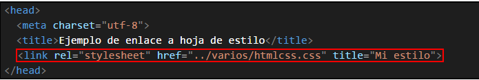
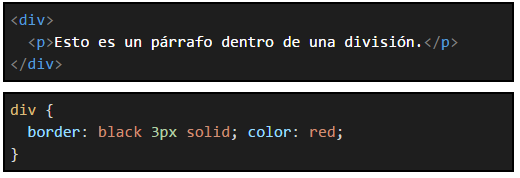
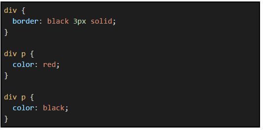
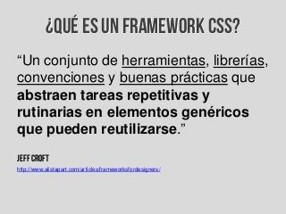

El propósito de este sitio web es de dinamizar las estrategias de aprendizaje por medio de ayudas didácticas en entrono web que permita facilitar un aprendizaje autónomo de acuerdo a la necesidad particulares de los estudiantes.
Para esta ocasión se describirá el tema de hojas de estilo en cascada CSS y framework CSS , en lenguaje HTML.
¿Por qué se llaman estilos en cascada?
Por qué se llaman estilos en cascada
Las hojas de estilo se llaman hojas de estilo "en cascada" porque:
Las propiedades de estilo pueden estar escritas en varios sitios (en varios lugares de la página web o de la hoja de estilo) y dependiendo del sitio, afectan a más o menos elementos.
Cuando un elemento está contenido en otro (por ejemplo, un párrafo
dentro de una división
), al elemento de dentro se le aplican también las propiedades definidas para el elemento de fuera (al párrafo
se le aplicarían las propiedades definidas para la división
).
Dos reglas distintas pueden ser de aplicación a un mismo elemento (por ejemplo, a un párrafo
con clase nombre, le es de aplicación tanto el selector .nombre como el selector p).
Reglas de aplicación de los estilos
Si se define la misma propiedad para la misma etiqueta con el mismo selector en dos sitios distintos, las reglas de precedencia son las siguientes:
Las propiedades definidas en un atributo style se imponen a las propiedades definidas en la etiqueta

Reglas distintas que se aplican al mismo elemento
Dos reglas distintas se aplican a un mismo elemento cuando el elemento coincide con los selectores de ambas reglas. La regla que se aplica es la del selector de mayor especificidad. La especificidad de un selector se calcula atendiendo a los siguientes criterios:
Número de atributos id en el selector
Número de otros atributos y pseudo-clases en el selector (los pseudo-elementos se ignoran)
Número de elementos en el selector
Posición en la hoja de estilo
Estos criterios se aplican en orden, es decir, primero se comparan el número de atributos id de cada selector. Si un selector tiene más que el otro, se aplica esa regla, si el número es el mismo, entonces se calcula el segundo criterio (número de otros atributos y pseudo-clases). Y así sucesivamente.
A continuación se muestran varios ejemplos de aplicación de estas reglas.

Posición en la hoja de estilo
Si a un elemento le afectan dos selectores con la misma especificidad, el navegador aplica la propiedad que aparece después en la hoja de estilo.
El ejemplo siguiente muestra dos selectores idénticos. Puede comprobarse que se aplica siempre el selector que aparece después en la hoja de estilo. En este caso, la penúltima regla es superflua y puede eliminarse sin afectar al resultado.

FRAMEWORK
Un framework agrega funcionalidad extendida a un lenguaje de programación, automatiza muchos de los patrones de programación para orientarlos a un determinado propósito, proporcionando una estructura al código, mejorándolo y haciéndolo más entendible y sostenible, y permite separar en capas la aplicación. En general, divide la aplicación en tres capas: • La lógica de presentación que administra las interacciones entre el usuario y el software. • La Lógica de datos que permite el acceso a un agente de almacenamiento persistente u otros. • La lógica de dominio o de negocio, que manipula los modelos de datos de acuerdo a los comandos recibidos desde la presentación.
Los Web Framework [3] pretenden facilitar el desarrollo de Aplicaciones web (Sitios web, intranets, etc). Actualmente, PHP es conocido por su simplicidad y es ampliamente usado en este campo del desarrollo de software web. También es común el uso de otros lenguajes “de scripting” o interpretados como Perl, Asp ó JSP que permiten mayor facilidad de uso y flexibilidad en el rápido desarrollo de aplicaciones, pero al mismo tiempo tienden a producir código de difícil sostenimiento y poco eficiente. En este ámbito, los patrones de diseño más utilizados son aquellos que se centran en separar la presentación (páginas HTML, CSS) de la lógica o backend. También es relevante la técnica de programación ORM [4] para convertir datos entre el sistema de tipos utilizado en un lenguaje de programación orientado a objetos y el utilizado en una base de datos; es el mapeo objetorelacional (más conocido por su nombre en inglés, Object-Relational mapping. En la práctica, crea una base de datos orientada a objetos virtual sobre la base de datos relacional. Esto posibilita el uso de las características propias de la orientación a objetos (básicamente herencia y polimorfismo). Hay paquetes comerciales y de uso libre disponibles que desarrollan el mapeo relacional de objetos, aunque algunos programadores prefieren crear sus propias herramientas ORM. Según Villalobos, G. M., Sánchez, G. D. C., & Gutiérrez, D. A. B. (2010)
